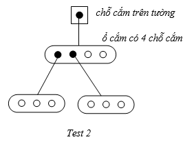

Trong nhà Nam hiện đang có n ổ cắm điện rời. Số lượng chỗ cắm trên mỗi ổ cắm điện này lần lượt là a1, a2, a3,…, an chỗ cắm. Trên tường nhà Nam có một chỗ cắm cố định đang có điện. Vậy để cho một ổ cắm điện rời có điện thì phải cắm ổ cắm đó vào chỗ cắm cố định trên tường. Chúng ta cũng có thể cắm ổ cắm điện rời này vào một ổ cắm điện rời khác đang có điện.
Nam có m thiết bị sử dụng điện, để sử dụng thì các thiết bị này cần được cắm vào ổ cắm trên tường hoặc ổ cắm rời đang có điện. Bạn hãy giúp Nam tìm ra số ổ cắm rời ít nhất cần dùng để có thể sử dụng tất cả m thiết bị điện này.
Dữ liệu vào:
- Dòng thứ nhất gồm 2 số nguyên n, m cách nhau một khoảng trắng, dữ liệu vào đảm bảo 1 ≤ n, m ≤ 50, n là số lượng ổ cắm và m là số lượng thiết bị.
- Dòng thứ hai gồm n số nguyên a1, a2, …, an là số chỗ cắm trên các ổ cắm rời tương ứng, mỗi số cách nhau một khoảng trắng, dữ liệu vào đảm bảo 1 ≤ ai ≤ 50.
Dữ liệu ra: là số nguyên cho biết số ổ cắm rời ít nhất cần sử dụng là bao nhiêu. Nếu đã sử dụng hết tất cả ổ cắm rời mà vẫn không đủ, in ra -1.
